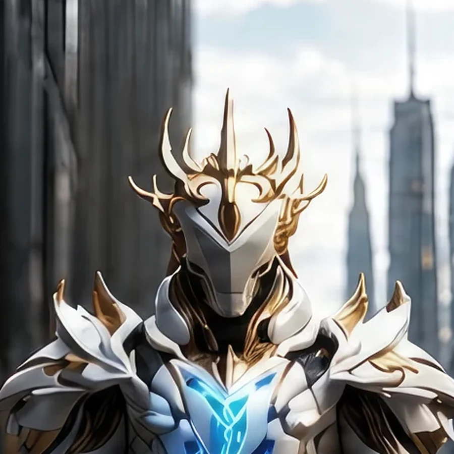
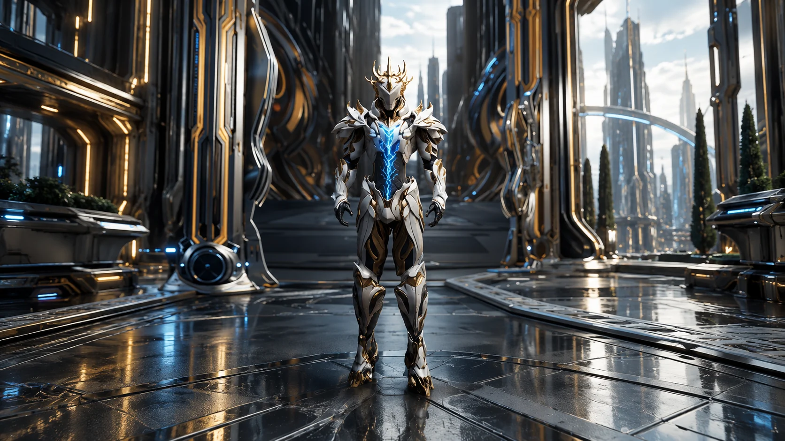

Field Observation
Iska investigates a narrow green alien tube built into the far-left structure on Earth 1. The tube points to alien biological storage operating inside the atrium.
 ©
©
GENEZYS ARCHIVE · Legionnaire
Null Capitulator
Identity & combat record
Archive node 01 / 04

Archive record
Iska stands where the cold is absolute and invites the enemy to strike. Behind the Carbon Freeze, every attack is returned as piercing frost. The Exalted Order teaches that a knight's first duty is to stand in front. Iska has never once stepped aside.
Combat signature
Suspends matter at absolute zero: Gets taunt for 1 round. Reflects 120 pierce damage to the attacker until the taunt lasts.
Genezys 03:08 ™&©2026LEGIONS
Field intelligence
Archive node 02 / 04
FIELD REPORT // SPECIMEN DEVICE

Field Observation
Iska investigates a narrow green alien tube built into the far-left structure on Earth 1. The tube points to alien biological storage operating inside the atrium.
Environment
Object Analysis
Key Findings
Restricted visual records
Archive node 03 / 04

Motion archive
Archive node 04 / 04
Motion record not yet recovered